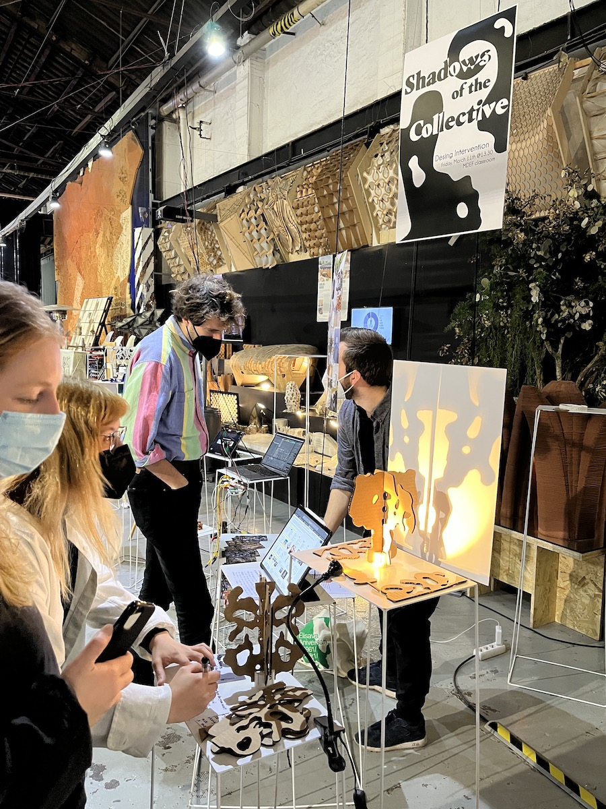
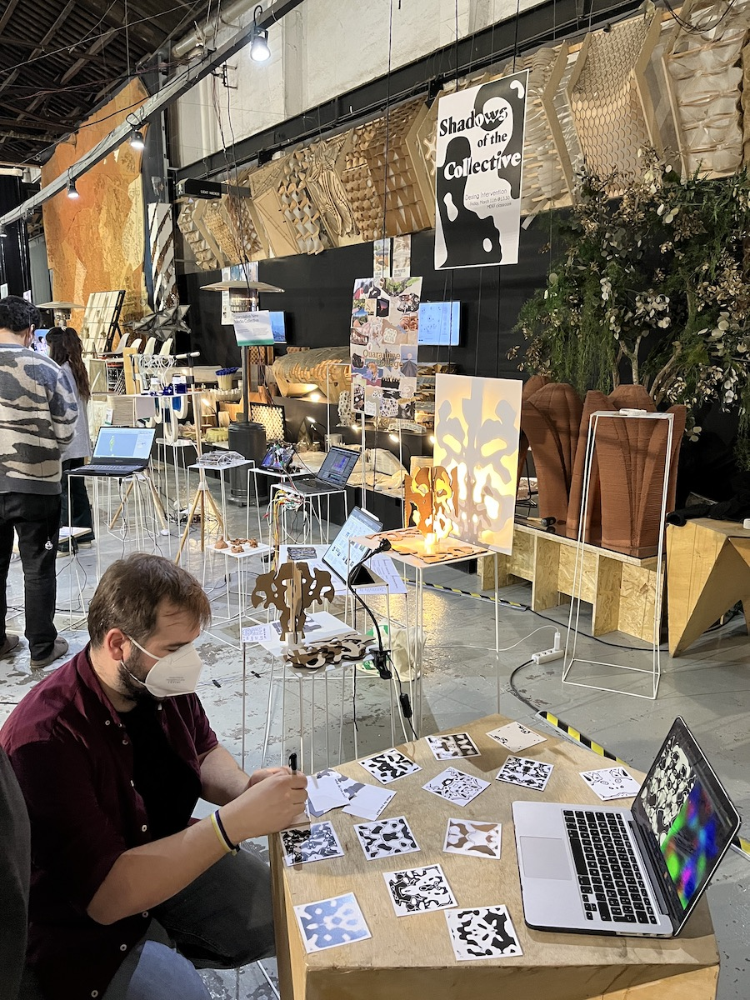
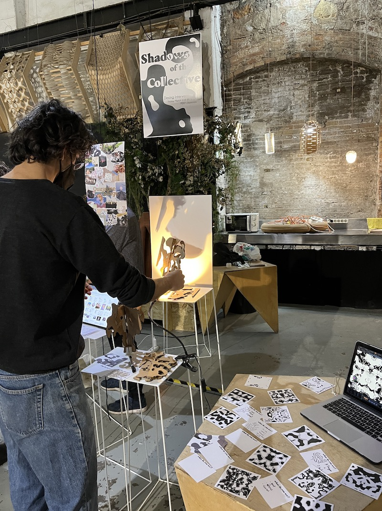
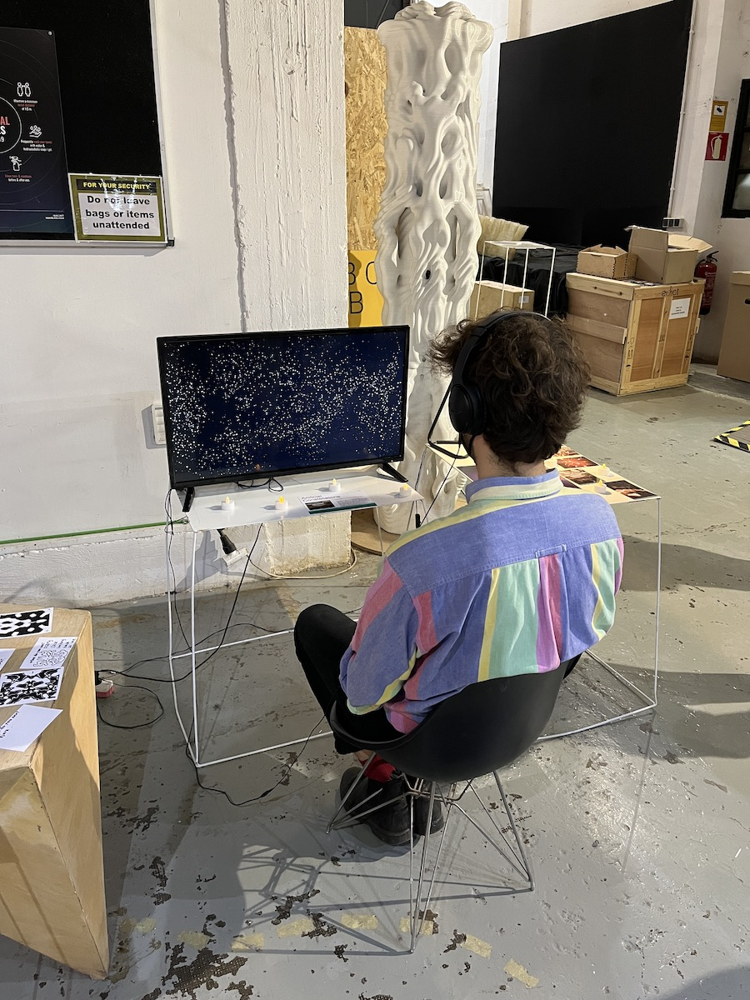
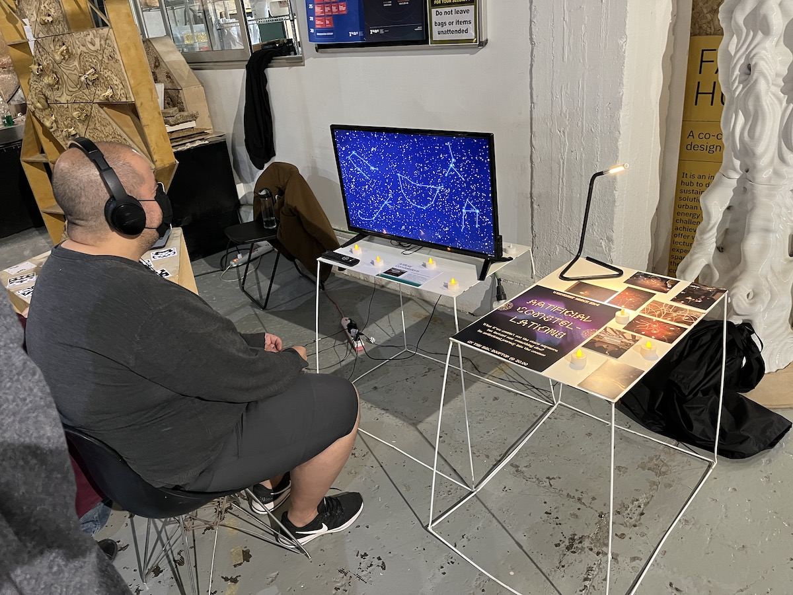
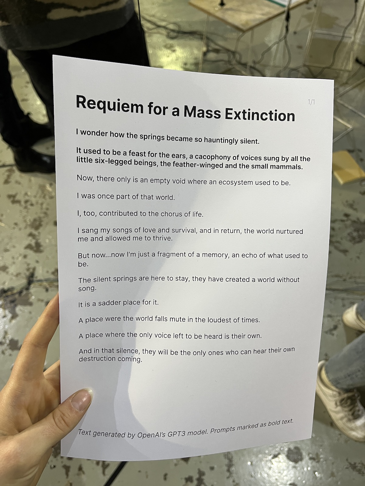
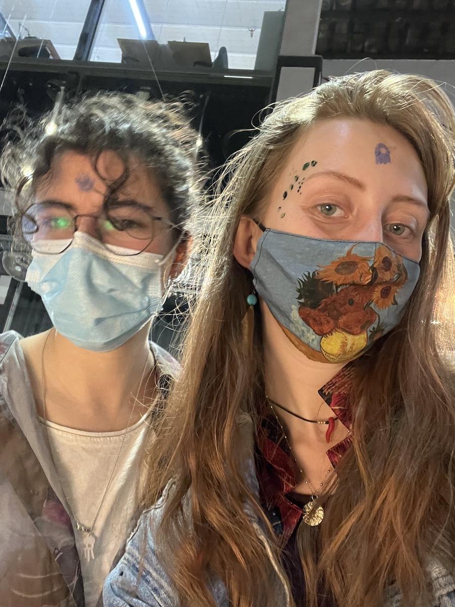
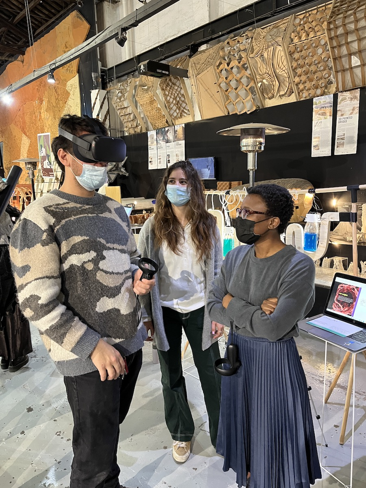
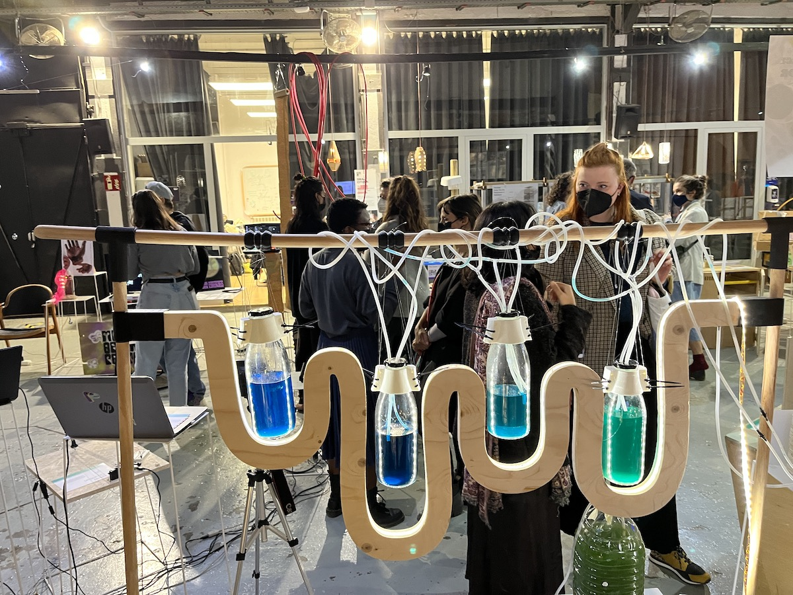
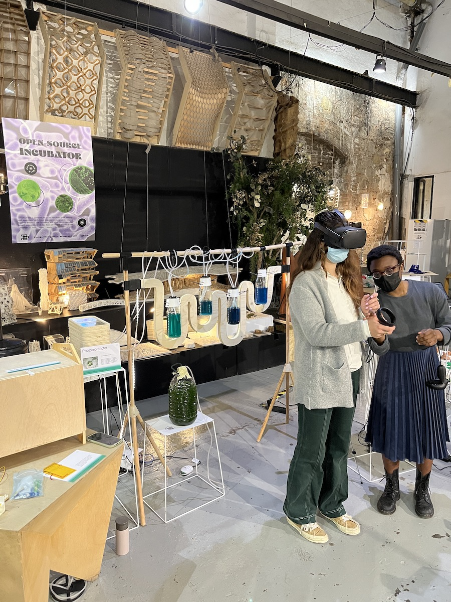

Weekly reflections
Documenting my Master's program, week by week
WEEK 11
Design Dialogues II
The second round of Design Dialogues. It's always a great way to get feedback from others but also explore other peoples' work.
I had some very interesting conversations about my projects with people who I wouldn't have normally been able to do so. I quite enjoyed talking to Kristina Andersen, Guillem, Mariana, Ramon Sanguesa and the students from Fabacademy.
It's hard to summarise everything in this post, but I will divide it between the Shadows of the Collective and Artificial Constellation



Shadows of the collective:
- The power in using the tools, the autonomy and liberty to create your own shadows
- Teaming up with professionals to see if this device could be applied in therapy sessions
- Similar patterns recognised by different individuals: uterus, corals
- Fabacademy student's (sorry i forgot your name) observation about seeing Dinosaur eggs everywhere ever since seeing a sad meme about species exctinction.
- Me realising after WEEKS that I had a mispelling mistake in the poster (it seems like I am unable to write the word "design")


Artificial Constellations:
- Collaborating with the Barcelona stars observatory, who also do exhibitions, but "a bit more bland and less controversial than this one" according to Ramon.
- How impactful the "new constellations" were at the end of the video
- The possibility of featuring similar works in spiritual experiences, as suggested by Mariana
- I was greatful to have done the exhibition the week before on the roof with all the participants, because I was able to show the pictures and talk about the constellations we made together
- I liked the setup we had, where everyone had to put on the headphones and stare at the tv, being immersed in a way.
Now, some photos of other projects which I really liked.




